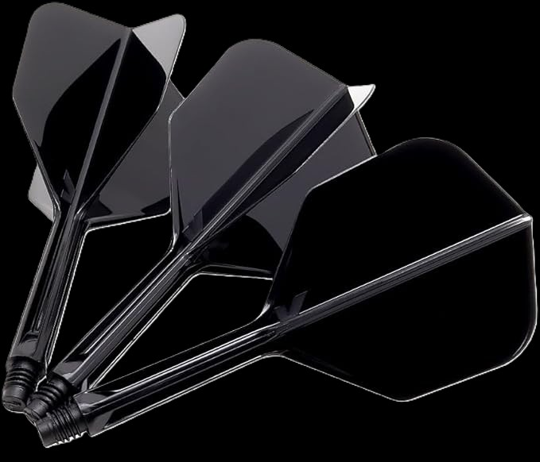
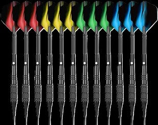
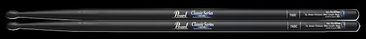

しー
電気通信大学Ⅰ類 1年
ABOUT
自己紹介・使っている道具
はじめまして、しーです。
ゲー障がダーツにはまってダー障になりました。
軽音系の部活でドラムを叩いてます。
最近は基本情報技術者試験とAtCoderに向けて精進中です。
- NAME
- しー
- CLUB
- 器楽部・軽音楽部・シンセデザイン研究部
- GAMES
- 太鼓の達人・OVERWATCH
- NOW
- 基本情報技術者試験 / AtCoder
MY GEAR
DARTS
フライト・シャフト / TARGET K-FLEX シェイプ インターミディエイト
バレル・チップ / WayArrival 12本セット


DRUMS
スティック / PEARL 7ABC ドラムスティック オーク ブラックラッカー

STATUS
DARTSLIVE3 のスタッツ
- RATING
- —
- 01 GAMES
- —
- CRICKET
- —
LOADING...
イベントまでのカウントダウン
軽音夏合宿まで
—
調布祭まで
—
WORKS
随時演奏動画を載せる予定

LOG
精進の記録など
記録を読み込めませんでした。
LINKS
相互リンク募集中です
まだリンクがありません